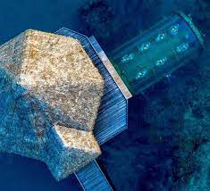
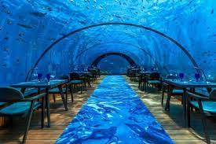
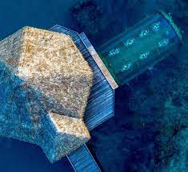
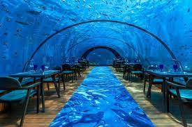

Ithaa, which means mother-of-pearl in Dhivehi, is an undersea restaurant located 5 metres below sea level at the Conrad Maldives Rangali Island in Alif Dhaal Atoll in the Republic of Maldives
The 5-by-9-metre mostly acrylic structure has a capacity of 14 people and is encased in R-Cast acrylic with a transparent roof offering a 270° panoramic underwater The restaurant was designed and constructed by M.J. Murphy Ltd – a design consultancy based in New Zealand – and was opened on in April 2005, describing itself as the world's first undersea restaurant. Food served in the restaurant has changed over the years and has more recently been described as contemporary European with Asian influences.
Ithaa's entrance is a spiral staircase in a thatched pavilion at the end of a jetty. The tsunami which followed the 2004 Indian Ocean earthquake topped at 0.31 metres below the staircase entrance, and caused no damage to the restaurant.
The restaurant is also used for private parties and weddings.In April 2010, to celebrate Ithaa's 5th anniversary, the restaurant could be booked as an overnight residence. This "underwater suite" promotion continued until April 2011
overview
location
chef ayyoub salameh
who created the outstanding menu
at ltaa was delighted at the recognition his signature resturant has received.
.jpeg)  
 
.jpeg)